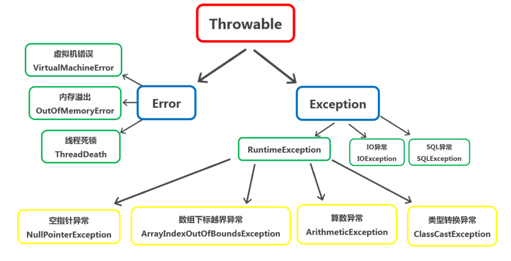
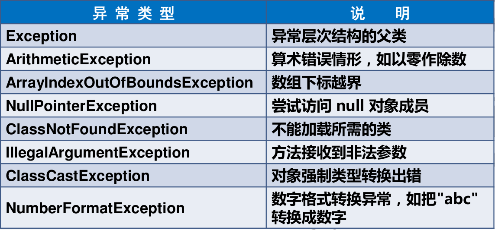
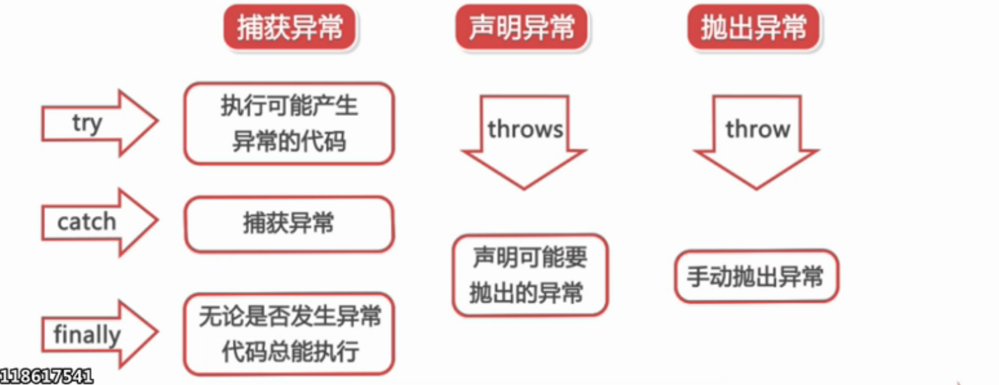

问题也是现实生活中的一个具体的事物, 也可以通过java 类的形式描述, 并封装成对象.
异常本质上是程序的错误。包括编译期间和运行期间的错误。少写了分号，这些编译器能识别出来的错误是编译错误，编译器不报错但运行出错的错误是运行错误。
Java异常处理机制，可以更好的提升程序的健壮性。
如果我们对异常置之不理,程序可能会不正常运行、强制中断运行、造成用户数据丢失、资源无法正常释放、直接导致系统崩溃,显然这不是我们希望看到的结果。
一. 异常的分类
在Java中,通过Throwable及其子类描述各种不同的异常类型。
Throwable有两个重要的子类:Exception 和 Error

Error是程序无法处理的错误，大多和程序员的操作无关，而是代码运行时JVM出现的问题，比如当JVM内存不足以支撑程序运行时，将出现OutOfMemoryError，这些错误都是不可查的，更多是程序与JVM硬件的冲突，我们是无能为力的，因此，这类异常我们是不需要关心的。
exception是程序本身可以处理的异常，异常处理就是针对exception异常。
exception异常分为unchecked exception(运行时异常) 和 checked exception(编译时异常)。
前者是编译器不要求强制处置的异常，Java编译器不会检查这些异常,在程序中可以选择捕获处理,也可以不处理,照样正常编译通过（相对宽松） -- RuntimeException。
后者是编译器要求必须处置的异常，Java编译器会检查这些异常,当程序中可能出现这类异常时,要求必须进行异常处理,否则编译不会通过（相对严格）。
unchecked exception：RuntimeException类及其子类异常，如NullPointerException(空指针异常)/IndexOutOfBoundsException(下标越界异常)等。
checked exception：RuntimeException及其子类以外,其他的Exception类的子类。如IOException、SQLException等
一些常见的异常类：

二. 异常处理的分类
在Java应用程序中,异常处理机制为:抛出异常、捕捉异常

1. 抛出异常
- 当一个方法出现错误引发异常时,方法创建异常对象并交付运行时系统。
- 异常对象中包含了异常类型和异常出现时的程序状态等异常信息。
- 运行时系统负责寻找处置异常的代码并执行
2. 捕获异常
- 在方法抛出异常之后,运行时系统将转为寻找合适的异常处理器。
- 运行时系统从发生异常的方法开始,依次回查调用栈中的方法,当异常处理器所能处理的异常类型与方法抛出的异常类型相符时,即为合适的异常处理器。
- 当运行时系统遍历调用栈而未找到合适的异常处理器,则运行时系统终止。同时,意味着Java程序的终止。
3. 几点说明
- 异常总是先被抛出,后被捕捉的
- Java规定:对于可查异常必须捕捉、或者声明抛出。允许忽略不可查的RuntimeException和Error。
- 异常的意义:
对问题进行封装, 将正常的逻辑代码和问题处理的代码分离开,方便阅读. - 异常处理的原则:
- 处理方式有两种, try 或者 throws
- catch内,要定义针对性的处理方式, 不要简单的定义printStackTrace, 也不要不写.\
- 当捕获的异常无法处理时,可以在 catch 中继续抛出
- 捕获异常后, 如果无法处理,可以将捕获的异常转为相关的异常抛出
```java
// 无法处理,继续抛出
try{
throw new AException();
} catch (AExcepption e){ throw e; }
// 无法处理,转换后抛出 try{ throw new AException(); } catch (AExcepption e){ // 先做一些能处理的部分 throw new BException(); } ```